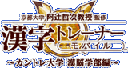
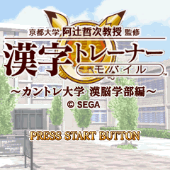
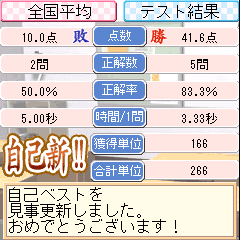
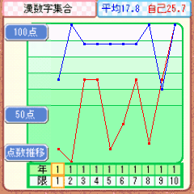
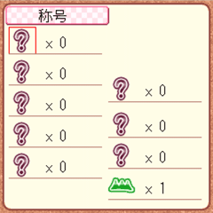

|  |
||
|
■ 京都大学 阿辻哲次教授 監修 漢字トレーナーモバイル ■ 〜カントレ大学 漢脳学部編〜 |
||
|
|
|
|
| ■ ゲーム概要 |
|  |
「カントレ大学」は漢字を専門に学ぶ架空の特殊単科大学です。 プレイヤーは｢カントレ大学｣に入学し、漢字を使った様々な問題を４択のテスト形式で解いて漢字を学んでいきます。 １〜４年生までのカリキュラムを無事修了すると、卒業認定書がもらえます。認定書には成績にあった称号が記されており、より良い称号を手に入れることがこのゲームの目的です。 |
| ■ 問題 |
| カントレ大学では漢字を使った脳のトレーニング「計算」「反射・判断」「記憶」、漢字の知識を身につける「雑学」計４つのジャンルから問題が出題されます。 各学年の最後には、各学年ごとに解いた問題からランダムで問題が出題される「総合試験」があります。今までの特訓の成果を発揮しましょう!! |
| ■ 結果 |
|  |
テストの結果は全国平均点との比較により｢単位｣に換算されます。全国平均点を上回れば上回るほど多くの｢単位｣を獲得することができます。 |
| ■ 全国平均 |
|  |
テストごとに記録される「全国平均点数」と「自分の点数」はゲーム中のグラフで確認することができます。 |
■ 称号 |
 |
晴れて卒業すると｢称号｣つきの認定書がもらえます。集めた称号はゲーム中で閲覧でき、ランキング確認することも可能です。 |
<<戻る>>
© SEGA